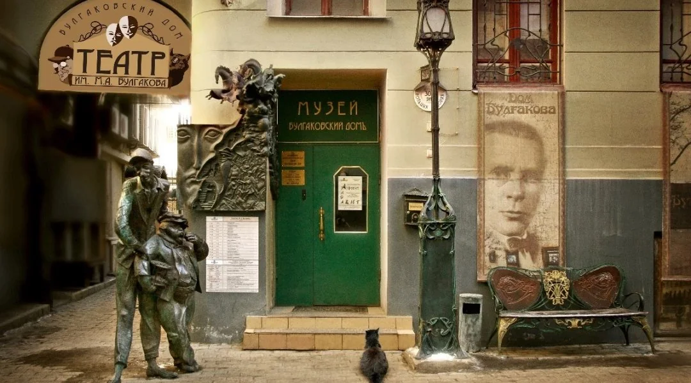

Метро «Маяковская»
Визит в Дом
Большая Садовая, 10
Пройдите через арку во двор. Вход в музей-театр — первый подъезд, первый этаж.
- Музей
- Ежедневно 12:00–21:00
- Касса театра
- Ежедневно 13:00–19:00
+7 (495) 970-06-19 · +7 (495) 775-94-61
Для групповых программ
+7 (916) 918-37-43 · zakaz@dombulgakova.ru
Написать в музей
Форма подготовит черновик. Отправить письмо можно в вашей почте.
Черновик готов. Откройте его в почте, чтобы отправить.

Два музея в одном доме
Музей-театр принимает гостей в первом подъезде. У государственного Музея Михаила Булгакова и его квартиры № 50 отдельная касса. Вход в квартиру — шестой подъезд, четвёртый этаж.
Для экскурсии на 302-БИС с посещением квартиры группа встречается у музея-театра.
Посещение квартиры № 50